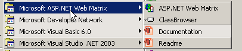
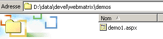

10. Annexes - Les outils du développement web
Nous indiquons ici où trouver et comment installer des outils gratuits permettant de faire du développement web en java, php, asp et asp.net. Certains outils ont vu leurs versions évoluer et il se peut que les explications données ici ne conviennent plus pour les versions les plus récentes. Le lecteur sera alors amené à s'adpater... :
- un navigateur récent capable d'afficher du XML. Les exemples du cours ont été testés avec Internet Explorer 6.
- un JDK (Java Development Kit) récent. Le JDK amène avec lui le Plug-in Java 1.4 pour les navigateurs ce qui permet à ces derniers d'afficher des applets Java utilisant le JDK 1.4.
- un environnement de développement Java pour écrire des servlets Java. Ici c'est JBuilder 7.
- des serveurs web : Apache, PWS (Personal Web Server, Cassini), Tomcat.
- Apache peut être utilisé pour le développement d'applications web en PERL (Practical Extracting and Reporting Language) ou PHP (Personal Home Page)
- PWS peut être utilisé pour le développement d'applications web en ASP (Active Server Pages) ou PHP sur les plate-formes Windows. Cassini lui permet le développement en ASP.NET.
- Tomcat est utilisé pour le développement d'applications web à l'aide de servlets Java ou de pages JSP (Java Server pages)
- un système de gestion de base de données : MySQL
- EasyPHP : un outil qui amène ensemble le serveur Web Apache, le langage PHP et le SGBD MySQL
10.1. Serveurs Web, Navigateurs, Langages de scripts
- Serveurs Web principaux
- Apache (Linux, Windows)
- Interner Information Server IIS (NT), Personal Web Server PWS (Windows 9x), Cassini (palte-formes .NET)
- Navigateurs principaux
- Internet Explorer (Windows)
- Netscape (Linux, Windows)
- Mozilla (Linux, Windows)
- Opera (Linux, Windows)
- Langages de scripts côté serveur
- VBScript (IIS, PWS)
- JavaScript (IIS, PWS)
- Perl (Apache, IIS, PWS)
- PHP (Apache, IIS, PWS)
- Java (Apache, Tomcat)
- Langages .NET
- Langages de scripts côté navigateur
- VBScript (IE)
- Javascript (IE, Netscape)
- Perlscript (IE)
- Java (IE, Netscape)
10.2. Où trouver les outils
http://www.netscape.com/ (lien downloads) | |
http://www.microsoft.com/windows/ie/default.asp | |
http://www.mozilla.org | |
http://www.php.net | |
http://www.activestate.com | |
http://msdn.microsoft.com/scripting (suivre le lien windows script) | |
http://java.sun.com/ | |
http://www.apache.org/ | |
inclus dans NT 4.0 Option pack for Windows 95 inclus dans le CD de Windows 98 http://www.microsoft.com/ntserver/nts/downloads/recommended/NT4OptPk/win95.asp | |
http://www.microsoft.com | |
http://jakarta.apache.org/tomcat/ | |
http://www.borland.com/jbuilder/ | |
http://www.easyphp.org/ | |
http://www.asp.net |
10.3. EasyPHP
Cette application est très pratique en ce qu'elle amène dans un même paquetage :
- le serveur Web Apache
- un interpréteur PHP
- le SGBD MySQL (3.23.x)
- un outil d'administration de MySQL : PhpMyAdmin
L'application d'installation se présente sous la forme suivante :

L'installation d'EasyPHP ne pose pas de problème et une arborescence est créée dans le système de fichiers :

l'exécutable de l'application | |
l'arborescence du serveur apache | |
l'arborescence du SGBD mysql | |
l'arborescence de l'application phpmyadmin | |
l'arborescence de php | |
racine de l'arborescence des pages web délivrées par le serveur apache d'EasyPHP | |
arborescence où l'on peut palcer des script CGI pour le serveur Apache |
L'intérêt principal d'EasyPHP est que l'application arrive préconfigurée. Ainsi Apache, PHP, MySQL sont déjà configurés pour travailler ensemble. Lorsqu'on lance EasyPhp par son lien dans le menu des programmes, une icône se met en place en bas à droite de l'écran.
 |
C'est le E avec un point rouge qui doit clignoter si le serveur web Apache et la base de données MySQL sont opérationnels. Lorsqu'on clique dessus avec le bouton droit de la souris, on accède à des options de menu :

L'option Administration permet de faire des réglages et des tests de bon fonctionnement :

10.3.1. Configuration de l'interpréteur PHP
Le bouton infos php doit vous permettre de vérifier le bon fonctionnement du couple Apache-PHP : une page d'informations PHP doit apparaître :

Le bouton extensions donne la liste des extensions installées pour php. Ce sont en fait des bibliothèques de fonctions.

L'écran ci-dessus montre par exemple que les fonctions nécessaires à l'utilisation de la base MySQL sont bien présentes.
Le bouton paramètres donne le login/motdepasse de l'administrateur de la base de données MySQL.

L'utilisation de la base MySQL dépasse le cadre de cette présentation rapide mais il est clai ici qu'il faudrait mettre un mot de passe à l'administrateur de la base.
10.3.2. Administration Apache
Toujours dans la page d'administration d'EasyPHP, le lien vos alias permet de définir des alias associés à un répertoire. Cela permet de mettre des pages Web ailleurs que dans le répertoire www de l'arborescence d'easyPhp.

Si dans la page ci-dessus, on met les informations suivantes :

et qu'on utilise le bouton valider les lignes suivantes sont ajoutées au fichier <easyphp>\apache\conf\httpd.conf :
Alias /st/ "e:/data/serge/web/"
<Directory "e:/data/serge/web">
Options FollowSymLinks Indexes
AllowOverride None
Order deny,allow
allow from 127.0.0.1
deny from all
</Directory>
<easyphp> désigne le répertoire d'installation d'EasyPHP. httpd.conf est le fichier de configuration du serveur Apache. On peut donc faire la même chose en éditant directement ce fichier. Une modification du fichier httpd.conf est normalement prise en compte immédiatement par Apache. Si ce n'était pas le cas, il faudrait l'arrêter puis le relancer, toujours avec l'icône d'easyphp :
Pour terminer notre exemple, on peut maintenant placer des pages web dans l'arborescence e:\data\serge\web :
et demander cette page en utilisant l'alias st :

Dans cet exemple, le serveur Apache a été configuré pour travailler sur le port 81. Son port par défaut est 80. Ce point est contrôlé par la ligne suivante du fichier httpd.conf déjà rencontré :
10.3.3. Le fichier [htpd.conf] de configuration d'Apache htpd.conf
Lorsqu'on veut configurer un peu finement Apache, on est obligé d'aller modifier "à la main" son fichier de configuration httpd.conf situé ici dans le dossier <easyphp>\apache\conf :

Voici quelques points à retenir de ce fichier de configuration :
| rôle |
indique le dossier où se trouve l'arborescence de Apache | |
indique sur quel port va travailler le serveur Web. Classiquement c'est 80. En changeant cette ligne, on peut faire travailler le serveur Web sur un autre port | |
l'adresse email de l'administrateur du serveur Apache | |
le nom de la machine sur laquelle "tourne" le serveur Apache | |
le répertoire d'installation du serveur Apache. Lorsque dans le fichier de configuration, apparaissent des noms relatifs de fichiers, ils sont relatifs par rapport à ce dossier. | |
le dossier racine de l'arborescence des pages Web délivrées par le serveur. Ici, l'url http://machine/rep1/fic1.html correspondra au fichier E:\Program Files\EasyPHP\www \rep1\fic1.html | |
fixe les propriétés du dossier précédent | |
dossier des logs, donc en fait <ServerRoot>\logs\error.log : E:\Program Files\EasyPHP\apache\logs\error.log. C'est le fichier à consulter si vous constatez que le serveur Apache ne fonctionne pas. | |
E:\Program Files\EasyPHP\cgi-bin sera la racine de l'arborescence où l'on pourra mettre des scripts CGI. Ainsi l'URL http://machine/cgi-bin/rep1/script1.pl sera l'url du script CGI E:\Program Files\EasyPHP\cgi-bin \rep1\script1.pl. | |
fixe les propriétés du dossier ci-dessus | |
lignes de chargement des modules permettant à Apache de travailler avec PHP4. | |
fixe les suffixes des fichiers à considérer comme des fichiers comme devant être traités par PHP |
10.3.4. Administration de MySQL avec PhpMyAdmin
Sur la page d'administration d'EasyPhp, on clique sur le bouton PhpMyAdmin :

La liste déroulante sous Accueil permet de voir les bases de données actuelles. |  |
Le nombre entre parenthèses est le nombre de tables. Si on choisit une base, les tables de celles-ci s'affichent : |  |
La page Web offre un certain nombre d'opérations sur la base :

Si on clique sur le lien Afficher de user :

Il n'y a ici qu'un seul utilisateur : root, qui est l'administrateur de MySQL. En suivant le lien Modifier, on pourrait changer son mot de passe qui est actuellement vide, ce qui n'est pas conseillé pour un administrateur. Nous n'en dirons pas plus sur PhpMyAdmin qui est un logiciel riche et qui mériterait un développement de plusieurs pages.
10.4. PHP
Nous avons vu comment obtenir PHP au travers de l'application EasyPhp. Pour obtenir PHP directement, on ira sur le site http://www.php.net. PHP n'est pas utilisable que dans le cadre du Web. On peut l'utiliser comme langage de scripts sous Windows. Créez le script suivant et sauvegardez-le sous le nom date.php :
<?
// script php affichant l'heure
$maintenant=date("j/m/y, H:i:s",time());
echo "Nous sommes le $maintenant";
?>
Dans une fenêtre DOS, placez-vous dans le répertoire de [date.php] et exécutez-le :
dos>"e:\program files\easyphp\php\php.exe" date.php
X-Powered-By: PHP/4.2.0
Content-type: text/html
Nous sommes le 18/07/02, 09:31:01
10.5. PERL
Il est préférable que Internet Explorer soit déjà installé. S'il est présent, Active Perl va le configurer afin qu'il accepte des scripts PERL dans les pages HTML, scripts qui seront exécutés par IE lui-même côté client. Le site de Active Perl est à l'URL http://www.activestate.comA l'installation, PERL sera installé dans un répertoire que nous appelerons <perl>. Il contient l'arborescence suivante :
DEISL1 ISU 32 403 23/06/00 17:16 DeIsL1.isu
BIN <REP> 23/06/00 17:15 bin
LIB <REP> 23/06/00 17:15 lib
HTML <REP> 23/06/00 17:15 html
EG <REP> 23/06/00 17:15 eg
SITE <REP> 23/06/00 17:15 site
HTMLHELP <REP> 28/06/00 18:37 htmlhelp
L'exécutable perl.exe est dans <perl>\bin. Perl est un langage de scripts fonctionnant sous Windows et Unix. Il est de plus utilisé dans la programmation WEB. Écrivons un premier script :
# script PERL affichant l'heure
# modules
use strict;
# programme
my ($secondes,$minutes,$heure)=localtime(time);
print "Il est $heure:$minutes:$secondes\n";
Sauvegardez ce script dans un fichier heure.pl. Ouvrez une fenêtre DOS, placez-vous dans le répertoire du script précédent et exécutez-le :
10.6. Vbscript, Javascript, Perlscript
Ces langages sont des langages de script pour windows. Ils peuvent fonctionner dans différents conteneurs tels
- Windows Scripting Host pour une utilisation directe sous Windows notamment pour écrire des scripts d'administration système
- Internet Explorer. Il est alors utilisé au sein de pages HTML auxquelles il amène une certaine interactivité impossible à atteindre avec le seul langage HTML.
- Internet Information Server (IIS) le serveur Web de Microsoft sur NT/2000 et son équivalent Personal Web Server (PWS) sur Win9x. Dans ce cas, vbscript est utilisé pour faire de la programmation côté serveur web, technologie appelée ASP (Active Server Pages) par Microsoft.
On récupère le fichier d'installation à l'URL : http://msdn.microsoft.com/scripting et on suit les liens Windows Script. Sont installés :
- le conteneur Windows Scripting Host, conteneur permettant l'utilisation de divers langages de scripts, tels Vbscript et Javascript mais aussi d'autres tel PerlScript qui est amené avec Active Perl.
- un interpréteur VBscript
- un interpréteur Javascript
Présentons quelques tests rapides. Construisons le programme vbscript suivant :
' une classe
class personne
Dim nom
Dim age
End class
' création d'un objet personne
Set p1=new personne
With p1
.nom="dupont"
.age=18
End With
' affichage propriétés personne p1
With p1
wscript.echo "nom=" & .nom
wscript.echo "age=" & .age
End With
Ce programme utilise des objets. Appelons-le objets.vbs (le suffixe vbs désigne un fichier vbscript). Positionnons-nous sur le répertoire dans lequel il se trouve et exécutons-le :
dos>cscript objets.vbs
Microsoft (R) Windows Script Host Version 5.6
Copyright (C) Microsoft Corporation 1996-2001. All rights reserved.
nom=dupont
age=18
Maintenant construisons le programme javascript suivant qui utilise des tableaux :
// tableau dans un variant
// tableau vide
tableau=new Array();
affiche(tableau);
// tableau croît dynamiquement
for(i=0;i<3;i++){
tableau.push(i*10);
}
// affichage tableau
affiche(tableau);
// encore
for(i=3;i<6;i++){
tableau.push(i*10);
}
affiche(tableau);
// tableaux à plusieurs dimensions
WScript.echo("-----------------------------");
tableau2=new Array();
for(i=0;i<3;i++){
tableau2.push(new Array());
for(j=0;j<4;j++){
tableau2[i].push(i*10+j);
}//for j
}// for i
affiche2(tableau2);
// fin
WScript.quit(0);
// ---------------------------------------------------------
function affiche(tableau){
// affichage tableau
for(i=0;i<tableau.length;i++){
WScript.echo("tableau[" + i + "]=" + tableau[i]);
}//for
}//function
// ---------------------------------------------------------
function affiche2(tableau){
// affichage tableau
for(i=0;i<tableau.length;i++){
for(j=0;j<tableau[i].length;j++){
WScript.echo("tableau[" + i + "," + j + "]=" + tableau[i][j]);
}// for j
}//for i
}//function
Ce programme utilise des tableaux. Appelons-le tableaux.js (le suffixe js désigne un fichier javascript). Positionnons-nous sur le répertoire dans lequel il se trouve et exécutons-le :
dos>cscript tableaux.js
Microsoft (R) Windows Script Host Version 5.6
Copyright (C) Microsoft Corporation 1996-2001. Tous droits réservés.
tableau[0]=0
tableau[1]=10
tableau[2]=20
tableau[0]=0
tableau[1]=10
tableau[2]=20
tableau[3]=30
tableau[4]=40
tableau[5]=50
-----------------------------
tableau[0,0]=0
tableau[0,1]=1
tableau[0,2]=2
tableau[0,3]=3
tableau[1,0]=10
tableau[1,1]=11
tableau[1,2]=12
tableau[1,3]=13
tableau[2,0]=20
tableau[2,1]=21
tableau[2,2]=22
tableau[2,3]=23
Un dernier exemple en Perlscript pour terminer. Il faut avoir installé Active Perl pour avoir accès à Perlscript.
<job id="PERL1">
<script language="PerlScript">
# du Perl classique
%dico=("maurice"=>"juliette","philippe"=>"marianne");
@cles= keys %dico;
for ($i=0;$i<=$#cles;$i++){
$cle=$cles[$i];
$valeur=$dico{$cle};
$WScript->echo ("clé=".$cle.", valeur=".$valeur);
}
# du perlscript utilisant les objets Windows Script
$dico=$WScript->CreateObject("Scripting.Dictionary");
$dico->add("maurice","juliette");
$dico->add("philippe","marianne");
$WScript->echo($dico->item("maurice"));
$WScript->echo($dico->item("philippe"));
</script>
</job>
Ce programme montre la création et l'utilisation de deux dictionnaires : l'un à la mode Perl classique, l'autre avec l'objet Scripting Dictionary de Windows Script. Sauvegardons ce code dans le fichier dico.wsf (wsf est le suffixe des fichiers Windows Script). Positionnons-nous dans le dossier de ce programme et exécutons-le :
dos>cscript dico.wsf
Microsoft (R) Windows Script Host Version 5.6
Copyright (C) Microsoft Corporation 1996-2001. Tous droits réservés.
clé=philippe, valeur=marianne
clé=maurice, valeur=juliette
juliette
marianne
Perlscript peut utiliser les objets du conteneur dans lequel il s'exécute. Ici c'était des objets du conteneur Windows Script. Dans le contexte de la programmation Web, les scripts VBscript, Javascript, Perlscript peuvent être exécutés soit au sein du navigateur IE, soit au sein d'un serveur PWS ou IIS. Si le script est un peu complexe, il peut être judicieux de le tester hors du contexte Web, au sein du conteneur Windows Script comme il a été vu précédemment. On ne pourra tester ainsi que les fonctions du script qui n'utilisent pas des objets propres au navigateur ou au serveur. Même avec cette restriction, cette possibilité reste intéressante car il est en général assez peu pratique de déboguer des scripts s'exécutant au sein des serveurs web ou des navigateurs.
10.7. JAVA
Java est disponible à l'URL : http://www.sun.com et s'installe dans une arborescence qu'on appellera <java> qui contient les éléments suivants :
22/05/2002 05:51 <DIR> .
22/05/2002 05:51 <DIR> ..
22/05/2002 05:51 <DIR> bin
22/05/2002 05:51 <DIR> jre
07/02/2002 12:52 8 277 README.txt
07/02/2002 12:52 13 853 LICENSE
07/02/2002 12:52 4 516 COPYRIGHT
07/02/2002 12:52 15 290 readme.html
22/05/2002 05:51 <DIR> lib
22/05/2002 05:51 <DIR> include
22/05/2002 05:51 <DIR> demo
07/02/2002 12:52 10 377 848 src.zip
11/02/2002 12:55 <DIR> docs
Dans bin, on trouvera javac.exe, le compilateur Java et java.exe la machine virtuelle Java. On pourra faire les tests suivants :
- Écrire le script suivant :
//programme Java affichant l'heure
import java.io.*;
import java.util.*;
public class heure{
public static void main(String arg[]){
// on récupère date & heure
Date maintenant=new Date();
// on affiche
System.out.println("Il est "+maintenant.getHours()+
":"+maintenant.getMinutes()+":"+maintenant.getSeconds());
}//main
}//class
- Sauvegarder ce programme sous le nom heure.java. Ouvrir une fenêtre DOS. Se mettre dans le répertoire du fichier heure.java et le compiler :
dos>c:\jdk1.3\bin\javac heure.java
Note: heure.java uses or overrides a deprecated API.
Note: Recompile with -deprecation for details.
Dans la commande ci-dessus [c:\jdk1.3\bin\javac] doit être remplacé par le chemin exact du compilateur javac.exe. Vous devez obtenir dans le même répertoire que heure.java un fichier heure.class qui est le programme qui va maintenant être exécuté par la machine virtuelle java.exe.
- Exécuter le programme :
Dans la commande ci-dessus [c:\jdk1.3\bin\java] doit être remplacé par le chemin exact de la machine virtuelle java [java.exe].
10.8. Serveur Apache
Nous avons vu que l'on pouvait obtenir le serveur Apache avec l'application EasyPhp. Pour l'avoir directement, on ira sur le site d'Apache : http://www.apache.org. L'installation crée une arborescence où on trouve tous les fichiers nécessaires au serveur. Appelons <apache> ce répertoire. Il contient une arborescence analogue à la suivante :
UNINST ISU 118 805 23/06/00 17:09 Uninst.isu
HTDOCS <REP> 23/06/00 17:09 htdocs
APACHE~1 DLL 299 008 25/02/00 21:11 ApacheCore.dll
ANNOUN~1 3 000 23/02/00 16:51 Announcement
ABOUT_~1 13 197 31/03/99 18:42 ABOUT_APACHE
APACHE EXE 20 480 25/02/00 21:04 Apache.exe
KEYS 36 437 20/08/99 11:57 KEYS
LICENSE 2 907 01/01/99 13:04 LICENSE
MAKEFI~1 TMP 27 370 11/01/00 13:47 Makefile.tmpl
README 2 109 01/04/98 6:59 README
README NT 3 223 19/03/99 9:55 README.NT
WARNIN~1 TXT 339 21/09/98 13:09 WARNING-NT.TXT
BIN <REP> 23/06/00 17:09 bin
MODULES <REP> 23/06/00 17:09 modules
ICONS <REP> 23/06/00 17:09 icons
LOGS <REP> 23/06/00 17:09 logs
CONF <REP> 23/06/00 17:09 conf
CGI-BIN <REP> 23/06/00 17:09 cgi-bin
PROXY <REP> 23/06/00 17:09 proxy
INSTALL LOG 3 779 23/06/00 17:09 install.log
dossier des fichiers de configuration d'Apache | |
dossier des fichiers de logs (suivi) d'Apache | |
les exécutables d'Apache |
10.8.1. Configuration
Dans le dossier <Apache>\conf, on trouve les fichiers suivants : httpd.conf, srm.conf, access.conf. Dans les dernières versions d'Apache, les trois fichiers ont été réunis dans httpd.conf. Nous avons déjà présenté les points importants de ce fichier de configuration. Dans les exemples qui suivent c'est la version Apache d'EasyPhp qui a servi aux tests et donc son fichier de configuration. Dans celui-ci DocumentRoot qui désigne la racine de l'arborescence des pages Web est e:\program files\easyphp\www.
10.8.2. Lien PHP - Apache
Pour tester, créer le fichier intro.php avec la seule ligne suivante :
et le mettre à la racine des pages du serveur Apache(DocumentRoot ci-dessus). Demander l’URL http://localhost/intro.php. On doit voir une liste d’informations php :

Le script PHP suivant affiche l'heure. Nous l'avons déjà rencontré :
<?
// time : nb de millisecondes depuis 01/01/1970
// "format affichage date-heure
// d: jour sur 2 chiffres
// m: mois sur 2 chiffres
// y : année sur 2 chiffres
// H : heure 0,23
// i : minutes
// s: secondes
print "Nous sommes le " . date("d/m/y H:i:s",time());
?>
Plaçons ce fichier texte à la racine des pages du serveur Apache (DocumentRoot ) et appelons-le date.php. Demandons avec un navigateur l’URL http://localhost/date.php. On obtient la page suivante :

10.8.3. Lien PERL-APACHE
Il est fait grâce à une ligne de la forme : ScriptAlias /cgi-bin/ "E:/Program Files/EasyPHP/cgi-bin/" du fichier <apache>\conf\httpd.conf. Sa syntaxe est ScriptAlias /cgi-bin/ "<cgi-bin>" où <cgi-bin> est le dossier où on pourra placer des scripts CGI. CGI (Common Gateway Interface) est une norme de dialogue serveur WEB <--> Applications. Un client demande au serveur Web une page dynamique, c.a.d. une page générée par un programme. Le serveur WEB doit donc demander à un programme de générer la page. CGI définit le dialogue entre le serveur et le programme, notamment le mode de transmission des informations entre ces deux entités. Si besoin est, modifiez la ligne ScriptAlias /cgi-bin/ "<cgi-bin>" et relancez le serveur Apache. Faites ensuite le test suivant :
- Écrire le script :
#!c:\perl\bin\perl.exe
# script PERL affichant l'heure
# modules
use strict;
# programme
my ($secondes,$minutes,$heure)=localtime(time);
print <<FINHTML
Content-Type: text/html
<html>
<head>
<title>heure</title>
</head>
<body>
<h1>Il est $heure:$minutes:$secondes</h1>
</body>
FINHTML
;
- Mettre ce script dans <cgi-bin>\heure.pl où <cgi-bin> est le dossier pouvant recevoir des scripts CGI (cf httpd.conf). La première ligne #!c:\perl\bin\perl.exe désigne le chemin de l'exécutable perl.exe. Le modifier si besoin est.
- Lancer Apache si ce n'est fait
- Demander avec un navigateur l'URL http://localhost/cgi-bin/heure.pl. On obtient la page suivante :

10.9. Le serveur PWS
10.9.1. Installation
Le serveur PWS (Personal Web Server) est une version personnelle du serveur IIS (Internet Information server) de Microsoft. Ce dernier est disponible sur les machines NT et 2000. Sur les machines win9x, PWS est normalement disponible avec le paquetage d'installation Internet Explorer. Cependant il n'est pas installé par défaut. Il faut prendre une installation personnalisée d'IE et demander l'installation de PWS. Il est par ailleurs disponibles dans le NT 4.0 Option pack for Windows 95.
10.9.2. Premiers tests
La racine des pages Web du serveur PWS est lecteur:\inetpub\wwwroot où lecteur est le disque sur lequel vous avez installé PWS. Nous supposons dans la suite que ce lecteur est D. Ainsi l'url http://machine/rep1/page1.html correspondra au fichier d:\inetpub\wwwroot\rep1\page1.html. Le serveur PWS interprète tout fichier de suffixe .asp (Active Server pages) comme étant un script qu'il doit exécuter pour produire une page HTML. PWS travaille par défaut sur le port 80. Le serveur web Apache aussi... Il faut donc arrêter Apache pour travailler avec PWS si vous avez les deux serveurs. L'autre solution est de configurer Apache pour qu'il travaille sur un autre port. Ainsi dans le fichier [httpd.conf] de configuration d'Apache, on remplace la ligne Port 80 par Port 81, Apache travaillera désormais sur le port 81 et pourra être utilisé en même temps que PWS. Si PWS ayant été lancé, on demande l'URL http://localhost, on obtient une page analogue à la suivante :

10.9.3. Lien PHP - PWS
- Ci-dessous on trouvera un fichier .reg destiné à modifier la base de registres. Double-cliquer sur ce fichier pour modifier la base. Ici la dll nécessaire se trouve dans d:\php4 avec l'exécutable de php. Modifier si besoin est. Les \ doivent être doublés dans le chemin de la dll.
REGEDIT4
[HKEY_LOCAL_MACHINE\SYSTEM\CurrentControlSet\Services\w3svc\parameters\Script Map]
".php"="d:\\php4\\php4isapi.dll"
- Relancer la machine pour que la modification de la base de registres soit prise en compte.
- Créer un dossier php dans d:\inetpub\wwwroot qui est la racine du serveur PWS. Ceci fait, activez PWS et prendre l’onglet « Avancé ». Sélectionner le bouton « Ajouter » pour créer un dossier virtuel :
- Valider le tout et relancer PWS. Mettre dans d:\inetpub\wwwroot\php le fichier intro.php ayant la seule ligne suivante :
- Demander au serveur PWS l’URL http://localhost/php/intro.php. On doit voir la liste d’informations php déjà présentées avec Apache.
10.10. Tomcat : servlets Java et pages JSP (Java Server Pages)
Tomcat est un serveur Web permettant de générer des pages HTML grâce à des servlets (programmes Java exécutés par le serveur web) où des pages JSP (Java Server Pages), pages mélangeant code Java et code HTML. C'est l'équivalent des pages ASP (Active Server Pages) du serveur IIS/PWS de Microsoft où là on mélange code VBScript ou Javascript avec du code HTML.
10.10.1. Installation
Tomcat est disponible à l'URL : http://jakarta.apache.org. On récupère un fichier .exe d'installation. Lorsqu'on lance ce programme, il commence par indiquer quel JDK il va utiliser. En effet Tomcat a besoin d'un JDK pour s'installer et ensuite compiler et exécuter les servlets Java. Il faut donc que vous ayez installé un JDK Java avant d'installer Tomcat. Le JDK le plus récent est conseillé. L'installation va créer une arborescence <tomcat> :

consiste simplement à décompresser cette archive dans un répertoire. Prenez un répertoire ne contenant dans son chemin que des noms sans espace (pas par exemple "Program Files"), ceci parce qu'il y a un bogue dans le processus d'installation de Tomcat. Prenez par exemple C:\tomcat ou D:\tomcat. Appelons ce répertoire <tomcat>. On y trouvera dedans un dossier appelé jakarta-tomcat et dans celui-ci l'arborescence suivante :
LOGS <REP> 15/11/00 9:04 logs
LICENSE 2 876 18/04/00 15:56 LICENSE
CONF <REP> 15/11/00 8:53 conf
DOC <REP> 15/11/00 8:53 doc
LIB <REP> 15/11/00 8:53 lib
SRC <REP> 15/11/00 8:53 src
WEBAPPS <REP> 15/11/00 8:53 webapps
BIN <REP> 15/11/00 8:53 bin
WORK <REP> 15/11/00 9:04 work
10.10.2. Démarrage/Arrêt du serveur Web Tomcat
Tomcat est un serveur Web comme l'est Apache ou PWS. Pour le lancer, on dispose de liens dans le menu des programmes :
pour lancer Tomcat | |
pour l'arrêter |
Lorsqu'on lance Tomcat, une fenêtre Dos s'affiche avec le contenu suivant :

On peut mettre cette fenêtre Dos en icône. Elle restera présente pendant tant que Tomcat sera actif. On peut alors passer aux premiers tests. Le serveur Web Tomcat travaille sur le port 8080. Une fois Tomcat lancé, prenez un navigateur Web et demandez l'URL http://localhost:8080. Vous devez obtenir la page suivante :

Suivez le lien Servlet Examples :

Cliquez sur le lien Execute de RequestParameters puis sur celui de Source. Vous aurez un premier aperçu de ce qu'est une servlet Java. Vous pourrez faire de même avec les liens sur les pages JSP.
Pour arrêter Tomcat, on utilisera le lien Stop Tomcat dans le menu des programmes.
10.11. Jbuilder
Jbuilder est un environnement de développement d'applications Java. Pour construire des servlets Java où il n'y a pas d'interfaces graphiques, il n'est pas indispensable d'avoir un tel environnement. Un éditeur de textes et un JDK font l'affaire. Seulement JBuilder apporte avec lui quelques plus par rapport à la technique précédente :
- facilité de débogage : le compilateur signale les lignes erronées d'un programme et il est facile de s'y positionner
- suggestion de code : lorsqu'on utilise un objet Java, JBuilder donne en ligne la liste des propriétés et méthodes de celui-ci. Cela est très pratique lorsqu'on sait que la plupart des objets Java ont de très nombreuses propriétés et méthodes qu'il est difficile de se rappeler.
On trouvera JBuilder sur le site http://www.borland.com/jbuilder. Il faut remplir un formulaire pour obtenir le logiciel. Une clé d'activation est envoyée par mél. Pour installer JBuilder 7, il a par exemple été procédé ainsi :
- trois fichiers zip ont été obtenus : pour l'application, pour la documentation, pour les exemples. Chacun de ces zip fait l'objet d'un lien séparé sur le site de JBuilder.
- on a installé d'abord l'application, puis la documentation et enfin les exemples
- lorsqu'on lance l'application la première fois, une clé d'activation est demandée : c'est celle qui vous a été envoyée par mél. Dans la version 7, cette clé est en fait la totalité d'un fichier texte que l'on peut placer, par exemple, dans le dossier d'installation de JB7. Au moment où la clé est demandée, on désigne alors le fichier en question. Ceci fait, la clé ne sera plus redemandée.
Il y a quelques configurations utiles à faire si on veut utiliser JBuilder pour construire des servlets Java. En effet, la version dite Jbuilder personnel est une version allégée qui ne vient notamment pas avec toutes les classes nécessaires pour faire du développement web en Java. On peut faire en sorte que JBuilder utilise les bibliothèques de classes amenées par Tomcat. On procède ainsi :
- lancer JBuilder

- activer l'option Tools/Configure JDKs

Dans la partie JDK Settings ci-dessus, on a normalement dans le champ Name un JDK 1.3.1. Si vous avez un JDK plus récent, utilisez le bouton Change pour désigner le répertoire d'installation de ce dernier. Ci-dessus, on a désigné le répertoire E:\Program Files\jdk14 où avait installé un JDK 1.4. Désormais, JBuilder utilisera ce JDK pour ses compilations et exécutions. Dans la partie (Class, Siurce, Documentation) on a la liste de toutes les bibliothèques de classes qui seront explorées par JBuilder, ici les classes du JDK 1.4. Les classes de celui-ci ne suffisent pas pour faire du développement web en Java. Pour ajouter d'autres bibliothèques de classes on utilise le bouton Add et on désigne les fichiers .jar supplémentaires que l'on veut utiliser. Les fichiers .jar sont des bibliothèques de classes. Tomcat 4.x amène avec lui toutes les bibliothèques de classes nécessaires au développement web. Elles se trouvent dans <tomcat>\common\lib où <tomcat> est le répertoire d'installation de Tomcat :

Avec le bouton Add, on va ajouter ces bibliothèques, une à une, à la liste des bibliothèques explorées par JBuilder :

A partir de maintenant, on peut compiler des programmes java conformes à la norme J2EE, notamment les servlets Java. Jbuilder ne sert qu'à la compilation, l'exécution étant ultérieurement assurée par Tomcat selon des modalités expliquées dans le cours.
10.12. Le serveur Web Cassini
Pour travailler avec la plate-forme .NET de Microsoft, on peut utiliser le serveur web Cassini. Celui-ci est disponible via un autre produit appelé [WebMatrix] qui est un environnement gratuit de développement web sur les plate-formes .NET disponible à l'url :

On suivra attentivement la démarche d'installation du produit :
- télécharger et installer la plate-forme .NET (1.1 en mars 2004)
- télécharger et installer WebMatrix
- télécharger et installer MSDE (Microsoft Data Engine) qui est une version limitée de SQL Server.
Une fois l'installation terminée, le produit [WebMatrix] est disponible dans les programmes installés :

Le lien [ASP.NET] Web Matrix lance l'IDE de développement ASP.NET :

Le lien [Class Browser] lance un outil d'exploration des classes .NET :

Pour tester l'installation, lançons [WebMatrix] :
4231

Lors du démarrage initial, [WebMatrix] demande les caractéristiques du nouveau projet.C'est sa configuration par défaut. On peut le configurer pour qu'il ne fasse pas apparaître cette boîte de dialogue au démarrage. On l'obtient alors par l'otion [File/New File]. [WebMatrix] permet de construire des squelettes pour différentes applications web. Ci-dessus, nous avons précisé avec (1) que nous voulions construire une application [ASP.ET Page] qui est une page Web. Avec (2), nous précisons le dossier dans lequel sera placée cette page Web. Dans (3) nous donnons le nom de la page. Elle doit avoir le suffixe .aspx. Enfin dans (4), nous précisons que nous voulons travailler avec le langage VB.NET, [WebMatrix] supportant par ailleurs les langages C# et J#.
Ceci fait, [WebMatrix] affiche une page d'édition du fichier [demo1.aspx]. Nous y plaçons le code suivant :

- l'onglet [Design] permet de "dessiner" la page web que l'on veut construire. Cela se passe comme avec un IDE de construction d'applications windows.
- la conception graphique de la page Web dans [Design] va générer du code HTML dans l'onglet [HTML]
- la page Web peut contenir des contrôles générant des événements auxquels il faut réagir, un bouton par exemple. Ces événements seront gérés par du code VB.NET qui sera placé dans l'onglet [Code]
- au final, le fichier demo1.aspx est un fichier texte mélangeant code HTML et code VB.NET, résultat de la conception graphique faite dans [Design], du code HTML qu'on a pu ajouter à la main dans [HTML] et du code VB.NET placé dans [Code]. La totalité du fichier est disponible dans l'onglet [All].
- un développeur ASP.ET expérimenté peut construire le fichier demo1.aspx directement avec un éditeur de texte sans l'aide d'aucun IDE.
Sélectionnons l'option [All] On constate que [WebMatrix] a déjà généré du code :
<%@ Page Language="VB" %>
<script runat="server">
' Insert page code here
'
</script>
<html>
<head>
</head>
<body>
<form runat="server">
<!-- Insert content here -->
</form>
</body>
</html>
Nous n'allons pas essayer ici d'expliquer ce code. Nous le transformons de la façon suivante :
<html>
<head>
<title>Démo asp.net </title>
</head>
<body>
Il est <% =Date.Now.ToString("hh:mm:ss") %>
</body>
</html>
Le code ci-dessus est un mélange de HTML et de code VB.NET. Celui-ci a été placé dans les balises <% ... %>. Pour exécuter ce code, nous utilisons l'option [View/Start]. [WebMatrix] lance alors le serveur Web Cassini s'il n'est pas déjà lancé

On peut accepter les valeurs par défaut proposées dans cette boîte de dialogue et choisir l'option [Start]. Le serveur Web est alors actif. [WebMatrix] va alors lancer le navigateur par défaut de la machine sur laquelle il se trouve et demander l'URL http://localhost:8080/demo1.aspx :

Il est possible d'utiliser le serveur Cassini en-dehors de [WebMatrix]. L'exécutable du serveur se trouve dans <WebMatrix>\<version>\WebServer.exe où <WebMatrix> est le répertoire d'installation de [WebMatrix] et <version> son n° de version :

Ouvrons une fenêtre Dos et positionnons-nous dans le dossier du serveur Cassini :
E:\Program Files\Microsoft ASP.NET Web Matrix\v0.6.812>dir
...
29/05/2003 11:00 53 248 WebServer.exe
...
Lançons [WebServer.exe] sans paramètres :
Nous obtenons une fenêtre d'aide :

L'application [WebServer] appelée également serveur web Cassini admet trois paramètres :
- /port : n° de port du service web. Peut-être quelconque. A par défaut la valeur 80
- /path : chemin physique d'un dossier du disque
- /vpath : dossier virtuel associé au dossier physique précédent. On prêtera attention au fait que la syntaxe n'est pas /path=chemin mais /vpath:chemin, contrairement à ce que dit le panneau d'aide ci-dessus.
Plaçons le fichier [demo1.aspx] dans le dossier suivant :

Associons au dossier physique [d:\data\devel\webmatrix] le dossier virtuel [/webmatrix]. Le serveur web pourrait être lancé de la façons suivante :
E:\Program Files\Microsoft ASP.NET Web Matrix\v0.6.812>webserver /port:100 /path:"d:\data\devel\webmatrix" /vpath:"/webmatrix"
Le serveur Cassini est alors actif et son icône apparaît dans la barre des tâches. Si on double-clique dessus :

On retrouve les paramètres de lancement du serveur. On dispose également de la possibilité d'arrêter [Stop] ou de relancer [Restart] le serveur web. Si on clique sur le lien [Root URL], on obtient la racine de l'arborescence web du serveur dans un navigateur :

Suivons le lien [demos] :

puis le lien [demo1.aspx] :

On voit donc que si le dossier physique P=[d:\data\devel\webmatrix] a été associé au dossier virtuel V=[/webmatrix] et que le serveur travaille sur le port 100, la page web [demo1.aspx] se trouvant physiquement dans [P\demos] sera accessible localement via l'URL [http://localhost:100/V/demos/demo1.aspx].
Nous avons montré, sur ce cas particulier, que le développement web ASP.NET pouvait être fait avec un simple éditeur de texte pour l'écriture des pages Web et le serveur Web Cassini pour tester celles-ci. Ceci est vrai quelque soit la complexité de l'application. L'IDE [WebMatrix] amène certaines facilités dans le développement mais peu. Un outil comme Visual Studio.NET est beaucoup plus performant mais c'est un produit commercial.